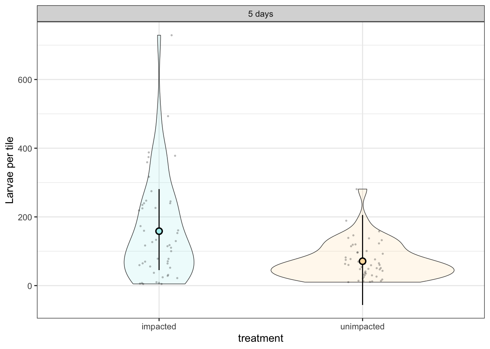

Experimental results
bayesian model outputs
Oocyte diameter
Code
#| class-source: fold-hide
#| message: false
#| warning: false
#| fig-width: 9.5
#| fig-height: 5
library(tidyverse)
library(janitor)
library(readxl)
library(brms)
library(patchwork)
library(reefspawn)
egg_diameter_output <- readxl::read_excel("/Users/rof011/reefspawn/code/SurvExpData.xlsx", sheet = "ReprodOutput") |>
janitor::clean_names() |>
dplyr::rename(
area = colony_size_cm2,
egg_cover = egg_percent_cover_jar,
egg_depth = egg_layer_tickness_mm,
egg_diameter = mean_egg_diameter_um
) |>
dplyr::mutate(
egg_diameter = as.numeric(egg_diameter),
treatment = dplyr::case_when(
stringr::str_detect(treatment, "SURV") ~ "impacted",
stringr::str_detect(treatment, "NORM") ~ "unimpacted",
TRUE ~ NA_character_
)
) |>
dplyr::select(treatment, species, egg_diameter) |>
tidyr::drop_na() |>
dplyr::mutate(var = paste0(species, "_", treatment))
# Fit model including species
# fm_egg_size <- brms::brm(
# egg_diameter ~ treatment * species,
# data = egg_diameter_output,
# cores = 10,
# chains = 4,
# iter = 6000
# )
#
# saveRDS(fm_egg_size, "/Users/rof011/reefspawn/code/fm_egg_size.rds")
fm_egg_size <- readRDS("/Users/rof011/reefspawn/code/fm_egg_size.rds")
# Fitted posterior summaries
fitted_vals <- fitted(fm_egg_size, scale = "response")
egg_diameter_output <- egg_diameter_output |>
mutate(
predicted = fitted_vals[, "Estimate"],
lower = fitted_vals[, "Q2.5"],
upper = fitted_vals[, "Q97.5"]
)
# Summarise for model overlay
egg_diameter_summary <- egg_diameter_output |>
group_by(species, treatment) |>
summarise(
predicted = unique(predicted),
lower = unique(lower),
upper = unique(upper),
.groups = "drop"
)
# Plot
ggplot() +
theme_bw() +
facet_wrap(~ species) +
geom_violin(
data = egg_diameter_output,
aes(x = treatment, y = egg_diameter, fill = treatment),
color = "grey50", scale = "width", alpha = 0.6, show.legend = FALSE
) +
geom_jitter(
data = egg_diameter_output,
aes(x = treatment, y = egg_diameter, fill = treatment),
width = 0.05, alpha = 0.5, show.legend = FALSE
) +
geom_boxplot(
data = egg_diameter_summary,
aes(x = treatment, fill = treatment,
lower = lower, upper = upper,
middle = predicted, ymin = lower, ymax = upper),
stat = "identity", width = 0.2, alpha = 0.4, show.legend = FALSE
) +
labs(y = "Egg size (µm)", title = "Egg size by Treatment") +
scale_fill_manual(values = c("navajowhite2", "paleturquoise")) +
scale_y_continuous(limits = c(0, 1000))Code
colony_area_output <- readxl::read_excel("/Users/rof011/reefspawn/code/SurvExpData.xlsx", sheet = "ReprodOutput") |>
janitor::clean_names() |>
dplyr::rename(
area = colony_size_cm2,
egg_cover = egg_percent_cover_jar,
egg_depth = egg_layer_tickness_mm,
egg_diameter = mean_egg_diameter_um
)|>
dplyr::select(treatment, species, area) |>
tidyr::drop_na() |>
dplyr::mutate(var = paste0(species, "_", treatment))
# check colony area differences
# fm_area <- brms::brm(
# area ~ species,
# data = colony_area_output,
# cores = 10,
# chains = 4,
# iter = 6000
# )
#
# saveRDS(fm_area, "/Users/rof011/reefspawn/code/fm_area.rds")
fm_area <- readRDS("/Users/rof011/reefspawn/code/fm_area.rds")Code
hypothesis(fm_egg_size, "treatmentunimpacted = 0")Hypothesis Tests for class b:
Hypothesis Estimate Est.Error CI.Lower CI.Upper Evid.Ratio
1 (treatmentunimpac... = 0 -2.23 65.03 -131.47 125.31 NA
Post.Prob Star
1 NA
---
'CI': 90%-CI for one-sided and 95%-CI for two-sided hypotheses.
'*': For one-sided hypotheses, the posterior probability exceeds 95%;
for two-sided hypotheses, the value tested against lies outside the 95%-CI.
Posterior probabilities of point hypotheses assume equal prior probabilities.No strong evidence of a treatment effect in hyacinthus.
Estimate –0.38 [–130.57, +128.79M]
Code
hypothesis(fm_area, "speciesspathulatha = 0")Hypothesis Tests for class b:
Hypothesis Estimate Est.Error CI.Lower CI.Upper Evid.Ratio
1 (speciesspathulatha) = 0 -600.54 121.09 -839.39 -359.22 NA
Post.Prob Star
1 NA *
---
'CI': 90%-CI for one-sided and 95%-CI for two-sided hypotheses.
'*': For one-sided hypotheses, the posterior probability exceeds 95%;
for two-sided hypotheses, the value tested against lies outside the 95%-CI.
Posterior probabilities of point hypotheses assume equal prior probabilities.No strong evidence of a difference in area between species.
Estimate –600.5 [–839.39, +359.22]
Code
hypothesis(fm_egg_size, "speciesspathulatha = 0")Hypothesis Tests for class b:
Hypothesis Estimate Est.Error CI.Lower CI.Upper Evid.Ratio
1 (speciesspathulatha) = 0 -0.16 61.19 -119.61 121.28 NA
Post.Prob Star
1 NA
---
'CI': 90%-CI for one-sided and 95%-CI for two-sided hypotheses.
'*': For one-sided hypotheses, the posterior probability exceeds 95%;
for two-sided hypotheses, the value tested against lies outside the 95%-CI.
Posterior probabilities of point hypotheses assume equal prior probabilities.Oocyte biomass
Code
#| class-source: fold-hide
#| message: false
#| warning: false
#| fig-width: 9.5
#| fig-height: 5
reproductive_output <- readxl::read_excel("/Users/rof011/reefspawn/code/SurvExpData.xlsx", sheet = "ReprodOutput") |>
janitor::clean_names() |>
dplyr::rename(area = colony_size_cm2) |>
dplyr::mutate(
egg_cover = as.numeric(egg_percent_cover_jar),
egg_depth = as.numeric(egg_layer_tickness_mm),
egg_diameter = as.numeric(mean_egg_diameter_um),
treatment = dplyr::case_when(
stringr::str_detect(treatment, "SURV") ~ "impacted",
stringr::str_detect(treatment, "NORM") ~ "unimpacted",
TRUE ~ NA_character_
)
) |>
dplyr::select(treatment, species, area, egg_diameter, egg_cover, egg_depth) |>
dplyr::rowwise() |>
dplyr::mutate(output = calculate_egg_densities(egg_diameter,egg_cover, egg_depth, method = "3d_packing"),
output2 = calculate_egg_densities(egg_diameter,egg_cover, egg_depth, method = "layered")
) |>
dplyr::ungroup() |>
dplyr::mutate(var = paste0(species, "_", treatment)) |>
tidyr::drop_na() |>
mutate(output = output / area,
output2 = output2 / area)
# # Fit model with species interaction
# fm_reproductive_output <- brm(
# output ~ treatment * species,
# data = reproductive_output,
# cores = 10,
# chains = 4,
# iter = 6000
# )
#
# saveRDS(fm_reproductive_output, "/Users/rof011/reefspawn/code/fm_reproductive_output.rds")
fm_reproductive_output <- readRDS("/Users/rof011/reefspawn/code/fm_reproductive_output.rds")
# Extract fitted values
fitted_vals <- fitted(fm_reproductive_output, scale = "response")
reproductive_output <- reproductive_output |>
mutate(
predicted = fitted_vals[, "Estimate"],
lower = fitted_vals[, "Q2.5"],
upper = fitted_vals[, "Q97.5"]
)
# Summarise predictions per treatment × species for plotting box layer
reproductive_summary <- reproductive_output |>
group_by(species, treatment) |>
summarise(
predicted = unique(predicted),
lower = unique(lower),
upper = unique(upper),
.groups = "drop"
)
# Plot
ggplot() +
theme_bw() +
facet_wrap(~ species) +
geom_violin(
data = reproductive_output,
aes(x = treatment, y = output, fill = treatment),
color = "grey50", scale = "width", alpha = 0.6, show.legend = FALSE
) +
geom_jitter(
data = reproductive_output,
aes(x = treatment, y = output, fill = treatment),
width = 0.05, alpha = 0.5, show.legend = FALSE
) +
geom_boxplot(
data = reproductive_summary,
aes(x = treatment, fill = treatment,
lower = lower, upper = upper,
middle = predicted, ymin = lower, ymax = upper),
stat = "identity", width = 0.2, alpha = 0.7, show.legend = FALSE
) +
labs(y = "Reproductive output (n per cm2)", title = "Reproductive output by Treatment") +
scale_fill_manual(values = c("navajowhite2", "paleturquoise"))Code
hypothesis(fm_reproductive_output, "treatmentunimpacted = 0")Hypothesis Tests for class b:
Hypothesis Estimate Est.Error CI.Lower CI.Upper Evid.Ratio
1 (treatmentunimpac... = 0 -5138974 19355732 -42924849 32449033 NA
Post.Prob Star
1 NA
---
'CI': 90%-CI for one-sided and 95%-CI for two-sided hypotheses.
'*': For one-sided hypotheses, the posterior probability exceeds 95%;
for two-sided hypotheses, the value tested against lies outside the 95%-CI.
Posterior probabilities of point hypotheses assume equal prior probabilities.No strong evidence of a treatment effect in hyacinthus.
Estimate –5.5M [–43.8, +33.3]
Code
hypothesis(fm_reproductive_output, "treatmentunimpacted + treatmentunimpacted:speciesspathulatha = 0")Hypothesis Tests for class b:
Hypothesis Estimate Est.Error CI.Lower CI.Upper Evid.Ratio
1 (treatmentunimpac... = 0 -58137442 19952480 -97621677 -18695671 NA
Post.Prob Star
1 NA *
---
'CI': 90%-CI for one-sided and 95%-CI for two-sided hypotheses.
'*': For one-sided hypotheses, the posterior probability exceeds 95%;
for two-sided hypotheses, the value tested against lies outside the 95%-CI.
Posterior probabilities of point hypotheses assume equal prior probabilities.Strong evidence that reproductive output is lower in unimpacted spathulata
Estimate –57.9M [–96.7M, –18.9M]
Larval development
Code
#| class-source: fold-hide
#| message: false
#| warning: false
#| fig-width: 9.5
#| fig-height: 5
string_treatment <- c(rep("S1",3), rep("N2", 3), rep("S2", 3), rep("N1", 3))
onboard_cultures <- readxl::read_excel("/Users/rof011/reefspawn/code/SurvExpData.xlsx", sheet = "OnboardCulture") |>
janitor::clean_names() |>
# clean up time
dplyr::mutate(time = as.POSIXct(samping_date, format = "%d/%m/%Y", tz = "UTC")) |>
dplyr::mutate(time = as.numeric(difftime(time, min(time), units = "days"))) |>
# clean up ID
#dplyr::filter(!is.na(treatment_id)) |>
dplyr::mutate(treatment = stringr::str_remove(treatment_id, "^Tank_")) |>
dplyr::mutate(sample_prefix = ifelse(is.na(sample_id), NA, substr(sample_id, 1, 2))) |>
dplyr::mutate(treatment = ifelse(is.na(treatment_id), sample_prefix, treatment_id)) %>% # replace missing treatment_id with sample_prefix, check seperately
dplyr::filter(treatment %in% c("N1", "N2", "S1", "S2")) %>%
mutate(rep = rep(c("a", "b", "c"), (nrow(.)/3))) |>
select(treatment, time, deformed, normal, total_larvae) |>
group_by(treatment, time) |>
summarise(deformed = mean(deformed), normal = mean(normal), total_larvae = mean(total_larvae)) |>
dplyr::mutate(species = dplyr::case_when(
stringr::str_detect(treatment, "1$") ~ "hyacinthus",
stringr::str_detect(treatment, "2$") ~ "spathulata",
TRUE ~ NA_character_
)) |>
dplyr::mutate(var = paste0(species, "_", treatment)) |>
tidyr::separate(var, into = c("species", "treatment"), sep = "_") |>
dplyr::mutate(condition = dplyr::case_when(
stringr::str_detect(treatment, "^N") ~ "unimpacted",
stringr::str_detect(treatment, "^S") ~ "impacted",
TRUE ~ NA_character_
)) |>
mutate(total_larvae = (total_larvae/16) * 1000) |>
mutate(treatment = condition)
# quadratic_counts <- brm(
# total_larvae ~ time + I(time^2) * treatment * species,
# data = onboard_cultures,
# family = gaussian(),
# chains = 4, cores = 4
# )
# saveRDS(quadratic_counts, "/Users/rof011/reefspawn/code/quadratic_counts.rds")
quadratic_counts <- readRDS("/Users/rof011/reefspawn/code/quadratic_counts.rds")
# Expand prediction grid with full interaction structure
newdata <- tidyr::expand_grid(
time = seq(min(onboard_cultures$time), max(onboard_cultures$time), length.out = 100),
treatment = unique(onboard_cultures$treatment),
species = unique(onboard_cultures$species)
)
# Get predicted values with uncertainty
quad_fitted <- fitted(
quadratic_counts,
newdata = newdata,
scale = "response",
allow_new_levels = TRUE
) |> as_tibble()
# Combine predictions
newdata_quad <- bind_cols(newdata, quad_fitted)
# Add condition back (if needed for fill/color)
newdata_quad <- newdata_quad |>
left_join(onboard_cultures |> distinct(treatment, species, condition), by = c("treatment", "species"))
# Plot
ggplot() +
theme_bw() +
facet_wrap(~ species) +
geom_ribbon(data = newdata_quad, aes(x = time, ymin = Q2.5, ymax = Q97.5, fill = condition),
alpha = 0.5, show.legend = FALSE) +
geom_line(data = newdata_quad, aes(x = time, y = Estimate, color = condition),
linewidth = 1.2, show.legend = FALSE) +
geom_line(data = onboard_cultures, aes(x = time, y = total_larvae, color = condition),
linetype = "dashed", show.legend = FALSE) +
geom_point(data = onboard_cultures, aes(x = time, y = total_larvae, fill = condition),
shape = 21, color = "black", size = 2, alpha = 0.9, show.legend = FALSE) +
labs(
title = "Quadratic fit of larval counts over time",
y = "n larvae / litre",
x = "Time (days)"
) +
scale_fill_manual(values = c("navajowhite", "paleturquoise")) +
scale_color_manual(values = c("navajowhite3", "paleturquoise3")) +
coord_cartesian(ylim = c(0, 2500))Code
hypothesis(quadratic_counts, "treatmentunimpacted + ItimeE2:treatmentunimpacted = 0")Hypothesis Tests for class b:
Hypothesis Estimate Est.Error CI.Lower CI.Upper Evid.Ratio
1 (treatmentunimpac... = 0 215.11 457.61 -717.78 1165.8 NA
Post.Prob Star
1 NA
---
'CI': 90%-CI for one-sided and 95%-CI for two-sided hypotheses.
'*': For one-sided hypotheses, the posterior probability exceeds 95%;
for two-sided hypotheses, the value tested against lies outside the 95%-CI.
Posterior probabilities of point hypotheses assume equal prior probabilities.No strong evidence of a treatment effect in spathulata.
Estimate 456.2 [–483.5, +1409.8]
Code
hypothesis(quadratic_counts,
"treatmentunimpacted +
ItimeE2:treatmentunimpacted +
treatmentunimpacted:speciesspathulata +
ItimeE2:treatmentunimpacted:speciesspathulata = 0")Hypothesis Tests for class b:
Hypothesis Estimate Est.Error CI.Lower CI.Upper Evid.Ratio
1 (treatmentunimpac... = 0 -483.54 456.21 -1409.84 430.19 NA
Post.Prob Star
1 NA
---
'CI': 90%-CI for one-sided and 95%-CI for two-sided hypotheses.
'*': For one-sided hypotheses, the posterior probability exceeds 95%;
for two-sided hypotheses, the value tested against lies outside the 95%-CI.
Posterior probabilities of point hypotheses assume equal prior probabilities.No strong evidence of a treatment effect in hyacinthus.
Estimate –456.21 [–1409.84, 430.191]
Larval settlement (5 days)
Code
#| class-source: fold-hide
#| message: false
#| warning: false
#| fig-width: 9.5
#| fig-height: 5
tiles <- readxl::read_excel("/Users/rof011/reefspawn/code/SurvExpData.xlsx", sheet = "SetTilesSurvREEF_cleaned") |>
janitor::clean_names() |>
mutate(days = date_scored - date_tile_deployment) |>
group_by(plot_id, days, tile_face, treatment, tile_number) |>
summarise(total_count = sum(settler_count)) |>
mutate(days = as.numeric(days)) |>
mutate(days = ifelse(days <100, "5 days", "110 days")) |>
mutate(days = as.factor(days)) |>
filter(treatment %in% c("Normal", "Survivor")) |>
dplyr::mutate(
treatment = dplyr::case_when(
stringr::str_detect(treatment, "Survivor") ~ "impacted",
stringr::str_detect(treatment, "Normal") ~ "unimpacted",
TRUE ~ NA_character_
)
)
tiles_grouped <- tiles |>
group_by(days, treatment, plot_id, tile_number) |>
summarise(total_count = sum(total_count))
tiles_grouped_mean <- tiles_grouped |>
group_by(days, treatment) |>
summarise(total_count = mean(total_count))
### first timepoint
tiles_counts_a <- brm(
total_count ~ treatment + (1|plot_id),
data = tiles_grouped |> filter(days == "5 days"),
family = gaussian(),
chains = 4, cores = 4
)Running /Library/Frameworks/R.framework/Resources/bin/R CMD SHLIB foo.c
using C compiler: ‘Apple clang version 17.0.0 (clang-1700.0.13.3)’
using SDK: ‘MacOSX15.4.sdk’
clang -isysroot /Library/Developer/CommandLineTools/SDKs/MacOSX.sdk -I"/Library/Frameworks/R.framework/Resources/include" -DNDEBUG -I"/Library/Frameworks/R.framework/Versions/4.4-arm64/Resources/library/Rcpp/include/" -I"/Library/Frameworks/R.framework/Versions/4.4-arm64/Resources/library/RcppEigen/include/" -I"/Library/Frameworks/R.framework/Versions/4.4-arm64/Resources/library/RcppEigen/include/unsupported" -I"/Library/Frameworks/R.framework/Versions/4.4-arm64/Resources/library/BH/include" -I"/Library/Frameworks/R.framework/Versions/4.4-arm64/Resources/library/StanHeaders/include/src/" -I"/Library/Frameworks/R.framework/Versions/4.4-arm64/Resources/library/StanHeaders/include/" -I"/Library/Frameworks/R.framework/Versions/4.4-arm64/Resources/library/RcppParallel/include/" -I"/Library/Frameworks/R.framework/Versions/4.4-arm64/Resources/library/rstan/include" -DEIGEN_NO_DEBUG -DBOOST_DISABLE_ASSERTS -DBOOST_PENDING_INTEGER_LOG2_HPP -DSTAN_THREADS -DUSE_STANC3 -DSTRICT_R_HEADERS -DBOOST_PHOENIX_NO_VARIADIC_EXPRESSION -D_HAS_AUTO_PTR_ETC=0 -include '/Library/Frameworks/R.framework/Versions/4.4-arm64/Resources/library/StanHeaders/include/stan/math/prim/fun/Eigen.hpp' -D_REENTRANT -DRCPP_PARALLEL_USE_TBB=1 -I/opt/R/arm64/include -fPIC -O3 -mtune=native -march=native -c foo.c -o foo.o
In file included from <built-in>:1:
In file included from /Library/Frameworks/R.framework/Versions/4.4-arm64/Resources/library/StanHeaders/include/stan/math/prim/fun/Eigen.hpp:22:
In file included from /Library/Frameworks/R.framework/Versions/4.4-arm64/Resources/library/RcppEigen/include/Eigen/Dense:1:
In file included from /Library/Frameworks/R.framework/Versions/4.4-arm64/Resources/library/RcppEigen/include/Eigen/Core:19:
/Library/Frameworks/R.framework/Versions/4.4-arm64/Resources/library/RcppEigen/include/Eigen/src/Core/util/Macros.h:679:10: fatal error: 'cmath' file not found
679 | #include <cmath>
| ^~~~~~~
1 error generated.
make: *** [foo.o] Error 1Code
# saveRDS(tiles_counts_a, "/Users/rof011/reefspawn/code/tiles_counts_a.rds")
tiles_counts_a <- readRDS("/Users/rof011/reefspawn/code/tiles_counts_a.rds")
# Create prediction grid
tiles_counts_a_newdata <- expand.grid(
treatment = unique(tiles_grouped$treatment),
plot_id = NA # marginalize over random effect
)
# Get fitted values on response scale with uncertainty
tiles_counts_a_fitted_vals <- fitted(tiles_counts_a, newdata = tiles_counts_a_newdata, scale = "response", allow_new_levels = TRUE) |> as_tibble()
tiles_counts_a_newdata <- bind_cols(tiles_counts_a_newdata, tiles_counts_a_fitted_vals)
#
# ggplot() +
# theme_bw() +
# geom_point(data = tiles_grouped |> filter(days == "5 days"), aes(x = treatment, y = total_count, fill = treatment),
# shape = 21, color = "black", alpha = 0.5, size = 2, position = position_jitter(width = 0.1)) +
# geom_pointrange(data = tiles_counts_a_newdata,
# aes(x = treatment, y = Estimate, ymin = Q2.5, ymax = Q97.5, fill = treatment),
# shape = 21, color = "black", size = 1.2) +
# labs(title = "Predicted settler counts by treatment (ZIP model)",
# y = "Predicted count (mean ± 95% CI)", x = "Treatment") +
# scale_fill_manual(values = c("paleturquoise", "navajowhite"))
tileplot_a <- ggplot() + theme_bw() + facet_wrap(~days) +
geom_violin(data = tiles_grouped |> filter(days == "5 days"), aes(treatment, total_count, fill=treatment), linewidth=0.25, alpha=0.2, show.legend = FALSE) +
geom_jitter(data = tiles_grouped |> filter(days == "5 days"), aes(treatment, total_count), width=0.1, size=0.4, alpha=0.2, show.legend = FALSE) +
geom_pointrange(data = tiles_counts_a_newdata,
aes(x = treatment, y = Estimate, ymin = Q2.5, ymax = Q97.5, fill = treatment),
shape = 21, linewidth=0.5, color = "black", size = 0.6, show.legend = FALSE) +
scale_fill_manual(values = c("paleturquoise", "navajowhite")) + ylab("Larvae per tile")
tileplot_a
Code
hypothesis(tiles_counts_a, "treatmentunimpacted = 0")Hypothesis Tests for class b:
Hypothesis Estimate Est.Error CI.Lower CI.Upper Evid.Ratio
1 (treatmentunimpac... = 0 -87.49 47.36 -176.56 4.67 NA
Post.Prob Star
1 NA
---
'CI': 90%-CI for one-sided and 95%-CI for two-sided hypotheses.
'*': For one-sided hypotheses, the posterior probability exceeds 95%;
for two-sided hypotheses, the value tested against lies outside the 95%-CI.
Posterior probabilities of point hypotheses assume equal prior probabilities.There is some evidence that unimpacted reefs had lower settler counts than impacted reefs. The effect size is large (–87), but uncertain — CI includes small positive values
Estimate -87.5 [–176.6, +4.7]
Larval recruitment (3 months)
Code
#| class-source: fold-hide
#| message: false
#| warning: false
#| fig-width: 9.5
#| fig-height: 5
# tiles_counts_b <- brm(
# total_count ~ treatment + (1|plot_id),
# data = tiles_grouped |> filter(days == "110 days"),
# family = zero_inflated_poisson(),
# chains = 4, cores = 4, adapt_delta = 0.95:
# )
#
# saveRDS(tiles_counts_b, "/Users/rof011/reefspawn/code/tiles_counts_b.rds")
tiles_counts_b <- readRDS("/Users/rof011/reefspawn/code/tiles_counts_b.rds")
# Create prediction grid
tiles_counts_b_newdata <- expand.grid(
treatment = unique(tiles_grouped$treatment),
plot_id = NA # marginalize over random effect
)
# Get fitted values on response scale with uncertainty
tiles_counts_b_fitted_vals <- fitted(tiles_counts_b, newdata = tiles_counts_b_newdata, scale = "response", allow_new_levels = TRUE) |> as_tibble()
tiles_counts_b_newdata <- bind_cols(tiles_counts_b_newdata, tiles_counts_b_fitted_vals)
#
# tileplot_b <- ggplot() +
# theme_bw() +
# geom_point(data = tiles_grouped |> filter(days == "5 days"), aes(x = treatment, y = total_count, fill = treatment),
# shape = 21, color = "black", alpha = 0.5, size = 2, position = position_jitter(width = 0.1)) +
# geom_pointrange(data = tiles_counts_b_newdata,
# aes(x = treatment, y = Estimate, ymin = Q2.5, ymax = Q97.5, fill = treatment),
# shape = 21, color = "black", size = 1.2) +
# labs(title = "Predicted settler counts by treatment (ZIP model)",
# y = "Predicted count (mean ± 95% CI)", x = "Treatment") +
# scale_fill_manual(values = c("paleturquoise", "navajowhite"))
tileplot_b <- ggplot() + theme_bw() + facet_wrap(~days) +
geom_violin(data = tiles_grouped |> filter(days == "110 days"), aes(treatment, total_count, fill=treatment), linewidth=0.25, alpha=0.2, show.legend = FALSE) +
geom_jitter(data = tiles_grouped |> filter(days == "110 days"), aes(treatment, total_count), width=0.1, size=0.4, alpha=0.2, show.legend = FALSE) +
geom_pointrange(data = tiles_counts_b_newdata,
aes(x = treatment, y = Estimate, ymin = Q2.5, ymax = Q97.5, fill = treatment),
shape = 21, linewidth=0.5, stroke = 0.5, color = "black", size = 0.6, show.legend = FALSE) +
scale_fill_manual(values = c("paleturquoise", "navajowhite")) + ylab("Larvae per tile")
tileplot_bCode
hypothesis(tiles_counts_b, "treatmentunimpacted = 0")Hypothesis Tests for class b:
Hypothesis Estimate Est.Error CI.Lower CI.Upper Evid.Ratio
1 (treatmentunimpac... = 0 -0.52 0.47 -1.42 0.43 NA
Post.Prob Star
1 NA
---
'CI': 90%-CI for one-sided and 95%-CI for two-sided hypotheses.
'*': For one-sided hypotheses, the posterior probability exceeds 95%;
for two-sided hypotheses, the value tested against lies outside the 95%-CI.
Posterior probabilities of point hypotheses assume equal prior probabilities.No strong evidence of a treatment effect
Estimate 0.52 [–1.42, +0.43]
Posterior predictions
i) effect sizes (impacted vs unimpacted)
proportional effect sizes, calculated as:
where:
• 1 = no effect (impacted = unimpacted)
• <1 = negative effect (impacted < unimpacted)
• >1 = positive effect (impacted > unimpacted)Code
##############################
##### fm_egg_size
##############################
posterior <- as.data.frame(fm_egg_size)
mu_hyacinthus_impacted <- posterior$b_Intercept
mu_hyacinthus_unimpacted <- posterior$b_Intercept + posterior$b_treatmentunimpacted
mu_spathulata_impacted <- posterior$b_Intercept + posterior$`b_speciesspathulatha`
mu_spathulata_unimpacted <- mu_spathulata_impacted +
posterior$`b_treatmentunimpacted` +
posterior$`b_treatmentunimpacted:speciesspathulatha`
rel_pct_hyacinthus <- (mu_hyacinthus_impacted / mu_hyacinthus_unimpacted)
rel_pct_spathulata <- (mu_spathulata_impacted / mu_spathulata_unimpacted)
fm_egg_size_posterior <- tibble(
species = c("hyacinthus", "spathulata"),
effect_size = c(mean(rel_pct_hyacinthus), mean(rel_pct_spathulata)) - 1,
effect_lower = c(quantile(rel_pct_hyacinthus, 0.025), quantile(rel_pct_spathulata, 0.025)) - 1,
effect_upper = c(quantile(rel_pct_hyacinthus, 0.975), quantile(rel_pct_spathulata, 0.975)) - 1
) |> mutate(stage = "1. oocyte size")
##############################
##### fm_reproductive_output
##############################
posterior_repro <- as.data.frame(fm_reproductive_output)
mu_hyacinthus_impacted <- posterior_repro$b_Intercept
mu_hyacinthus_unimpacted <- posterior_repro$b_Intercept + posterior_repro$b_treatmentunimpacted
mu_spathulata_impacted <- posterior_repro$b_Intercept + posterior_repro$`b_speciesspathulatha`
mu_spathulata_unimpacted <- mu_spathulata_impacted +
posterior_repro$`b_treatmentunimpacted` +
posterior_repro$`b_treatmentunimpacted:speciesspathulatha`
rel_pct_hyacinthus <- (mu_hyacinthus_impacted / mu_hyacinthus_unimpacted)
rel_pct_spathulata <- (mu_spathulata_impacted / mu_spathulata_unimpacted)
fm_repro_posterior <- tibble(
species = c("hyacinthus", "spathulata"),
effect_size = c(mean(rel_pct_hyacinthus), mean(rel_pct_spathulata)) - 1,
effect_lower = c(quantile(rel_pct_hyacinthus, 0.025), quantile(rel_pct_spathulata, 0.025)) - 1,
effect_upper = c(quantile(rel_pct_hyacinthus, 0.975), quantile(rel_pct_spathulata, 0.975)) - 1
) |> mutate(stage = "2. reproductive biomass")
##############################
##### larval development
##############################
posterior <- as.data.frame(quadratic_counts)
time <- 1.5
time2 <- time^2
mu_h_impacted <- posterior$b_Intercept + posterior$b_time * time + posterior$`b_ItimeE2` * time2
mu_h_unimpacted <- mu_h_impacted + posterior$`b_treatmentunimpacted` + posterior$`b_ItimeE2:treatmentunimpacted` * time2
mu_s_impacted <- mu_h_impacted + posterior$`b_speciesspathulata` + posterior$`b_ItimeE2:speciesspathulata` * time2
mu_s_unimpacted <- mu_s_impacted +
posterior$`b_treatmentunimpacted` +
posterior$`b_ItimeE2:treatmentunimpacted` * time2 +
posterior$`b_treatmentunimpacted:speciesspathulata` +
posterior$`b_ItimeE2:treatmentunimpacted:speciesspathulata` * time2
rel_pct_h <- mu_h_impacted /mu_h_unimpacted
rel_pct_s <- mu_s_impacted / mu_s_unimpacted
quadratic_counts_posterior <- tibble(
species = c("hyacinthus", "spathulata"),
effect_size = c(mean(rel_pct_h), mean(rel_pct_s)) - 1,
effect_lower = c(quantile(rel_pct_h, 0.025), quantile(rel_pct_s, 0.025)) - 1,
effect_upper = c(quantile(rel_pct_h, 0.975), quantile(rel_pct_s, 0.975)) - 1
) |> mutate(stage = "3. larval development")
##############################
##### larval settlement
##############################
posterior <- as.data.frame(tiles_counts_a)
mu_impacted <- posterior$b_Intercept
mu_unimpacted <- mu_impacted + posterior$b_treatmentunimpacted
rel_pct <- mu_impacted/ mu_unimpacted
tiles_counts_a_posterior <- tibble(
effect_size = mean(rel_pct) - 1,
effect_lower = quantile(rel_pct, 0.025) - 1,
effect_upper = quantile(rel_pct, 0.975) - 1,
species = NA,
stage = "4. larval settlement"
)
##############################
##### larval recruitment
##############################
posterior <- as.data.frame(tiles_counts_b)
log_mu_impacted <- posterior$b_Intercept
log_mu_unimpacted <- log_mu_impacted + posterior$b_treatmentunimpacted
mu_impacted <- exp(log_mu_impacted)
mu_unimpacted <- exp(log_mu_unimpacted)
rel_pct <- mu_impacted / mu_unimpacted
tiles_counts_b_posterior <- tibble(
effect_size = mean(rel_pct) - 1,
effect_lower = quantile(rel_pct, 0.025) - 1,
effect_upper = quantile(rel_pct, 0.975) - 1,
species = NA,
stage = "5. larval recruitment"
)
##############################
##### Combine
##############################
posterior_prediction_table <- bind_rows(
fm_egg_size_posterior,
fm_repro_posterior,
quadratic_counts_posterior,
tiles_counts_a_posterior,
tiles_counts_b_posterior
) |>
mutate(across(c(effect_size, effect_lower, effect_upper), ~ round(.x, 1))) |>
mutate(across(c(effect_size, effect_lower, effect_upper), ~ as.numeric(.x))) |>
mutate(species = ifelse(is.na(species), "pooled", species)) |>
select(stage, species, effect_size, effect_lower, effect_upper) |>
arrange(stage, species)
blankdf <- data.frame(
stage =c("4. larval settlement", "5. larval recruitment"),
species = NA, effect_size = NA, effect_lower = NA, effect_upper = NA)
DT::datatable(
posterior_prediction_table,
rownames = FALSE,
options = list(
pageLength = 10,
autoWidth = TRUE,
dom = 't'
),
class = 'stripe hover compact',
escape = FALSE
) %>%
DT::formatStyle(
columns = names(posterior_prediction_table),
fontSize = '70%'
) %>%
DT::formatStyle(
'stage',
target = 'row',
backgroundColor = DT::styleEqual(
unique(posterior_prediction_table$stage),
gray.colors(length(unique(posterior_prediction_table$stage)), start = 0.9, end = 0.7)
)
)Code
posterior_prediction_table_full <- rbind(posterior_prediction_table, blankdf)
posterior_predicts <- ggplot() +
theme_bw() +
facet_grid(~stage, scales = "free") +
geom_col(data = posterior_prediction_table_full,
aes(x = stage, y = effect_size, group = species, fill = species),
position = position_dodge(width = 0.45), width = 0.4, col="black", linewidth=0.2) +
geom_errorbar(data = posterior_prediction_table_full,
aes(x = stage, y = effect_size, group = species, ymin = effect_lower, ymax = effect_upper),
width = 0.1, position = position_dodge(width = 0.45)) +
scale_y_continuous(limits = c(-2.5, 2.5), breaks=c(-2, -1, 1, 2), oob = scales::oob_keep) +
labs(x = NULL, y = "Effect size (log scale difference)", fill = "Species") +
geom_hline(yintercept = 0, linewidth=0.2) +
theme(panel.grid.major.x = element_blank(),
panel.grid.minor.x = element_blank())
posterior_predictsCode
#ggsave(posterior_predicts,filename="/Users/rof011/reefspawn/code/posterior_predicts.pdf", width=6, height=2)ii) cumulative effects across life history stages
The cumulative effect size is the product of all individual stage posteriors:
Code
posterior_prediction_table <- bind_rows(
fm_egg_size_posterior,
fm_repro_posterior,
quadratic_counts_posterior,
tiles_counts_a_posterior,
tiles_counts_b_posterior
) |>
mutate(across(c(effect_size, effect_lower, effect_upper), ~ round(.x, 1))) |>
mutate(across(c(effect_size, effect_lower, effect_upper), ~ as.numeric(.x))) |>
mutate(species = ifelse(is.na(species), "pooled", species)) |>
select(stage, species, effect_size, effect_lower, effect_upper) |>
arrange(stage, species)
pooled_vals <- posterior_prediction_table |>
filter(species == "pooled")
blankdf <- pooled_vals |>
slice(rep(1:n(), each = 2)) |>
mutate(species = rep(c("hyacinthus", "spathulata"), times = nrow(pooled_vals)))
posterior_prediction_table <- rbind(posterior_prediction_table |> filter(!species=="pooled"), blankdf) |>
arrange(stage, species)
posterior_prediction_table_wider <- posterior_prediction_table |>
select(stage, species, effect_size) |>
pivot_wider(names_from = "stage", values_from = "effect_size") |>
rename(oocyte=2, biomass=3, larvae=4, settlement=5, recruitment=6) |>
mutate(probability = oocyte*biomass*larvae*settlement*recruitment)
#### posterior
# ========================
# 1. Extract posteriors
# ========================
posterior_egg <- as.data.frame(fm_egg_size)
posterior_repro <- as.data.frame(fm_reproductive_output)
posterior_dev <- as.data.frame(quadratic_counts)
posterior_settle <- as.data.frame(tiles_counts_a)
posterior_recruit <- as.data.frame(tiles_counts_b)
# ========================
# 2. Posterior ratios
# ========================
## Egg size
rel_pct_egg_h <- posterior_egg$b_Intercept / (posterior_egg$b_Intercept + posterior_egg$b_treatmentunimpacted)
rel_pct_egg_s <- (posterior_egg$b_Intercept + posterior_egg$`b_speciesspathulatha`) /
(posterior_egg$b_Intercept + posterior_egg$`b_speciesspathulatha` +
posterior_egg$b_treatmentunimpacted + posterior_egg$`b_treatmentunimpacted:speciesspathulatha`)
## Reproductive output
rel_pct_repro_h <- posterior_repro$b_Intercept / (posterior_repro$b_Intercept + posterior_repro$b_treatmentunimpacted)
rel_pct_repro_s <- (posterior_repro$b_Intercept + posterior_repro$`b_speciesspathulatha`) /
(posterior_repro$b_Intercept + posterior_repro$`b_speciesspathulatha` +
posterior_repro$b_treatmentunimpacted + posterior_repro$`b_treatmentunimpacted:speciesspathulatha`)
## Larval development
time <- 1.5
time2 <- time^2
mu_h_impacted <- posterior_dev$b_Intercept + posterior_dev$b_time * time + posterior_dev$`b_ItimeE2` * time2
mu_h_unimpacted <- mu_h_impacted + posterior_dev$b_treatmentunimpacted + posterior_dev$`b_ItimeE2:treatmentunimpacted` * time2
mu_s_impacted <- mu_h_impacted + posterior_dev$`b_speciesspathulata` + posterior_dev$`b_ItimeE2:speciesspathulata` * time2
mu_s_unimpacted <- mu_s_impacted +
posterior_dev$b_treatmentunimpacted +
posterior_dev$`b_ItimeE2:treatmentunimpacted` * time2 +
posterior_dev$`b_treatmentunimpacted:speciesspathulata` +
posterior_dev$`b_ItimeE2:treatmentunimpacted:speciesspathulata` * time2
rel_pct_dev_h <- mu_h_impacted / mu_h_unimpacted
rel_pct_dev_s <- mu_s_impacted / mu_s_unimpacted
## Settlement (pooled)
rel_pct_settle <- posterior_settle$b_Intercept / (posterior_settle$b_Intercept + posterior_settle$b_treatmentunimpacted)
## Recruitment (pooled, log-link)
mu_impacted <- exp(posterior_recruit$b_Intercept)
mu_unimpacted <- exp(posterior_recruit$b_Intercept + posterior_recruit$b_treatmentunimpacted)
rel_pct_recruit <- mu_impacted / mu_unimpacted
# ========================
# 3. Combine and summarise
# ========================
combined_draws_h <- mean(rel_pct_egg_h) * mean(rel_pct_repro_h) * mean(rel_pct_dev_h) * mean(rel_pct_settle) * mean(rel_pct_recruit) /5
combined_draws_s <- mean(rel_pct_egg_s) * mean(rel_pct_repro_s) * mean(rel_pct_dev_s) * mean(rel_pct_settle) * mean(rel_pct_recruit) /5
posterior_cumulative <- tibble(
species = c("hyacinthus", "spathulata"),
oocyte_size = c(mean(rel_pct_egg_h), mean(rel_pct_egg_s)),
reproductive_biomass = c(mean(rel_pct_repro_h), mean(rel_pct_repro_s)),
larval_development = c(mean(rel_pct_dev_h), mean(rel_pct_dev_s)),
larval_settlement = c(mean(rel_pct_settle), mean(rel_pct_settle)),
larval_recruitment = c(mean(rel_pct_recruit), mean(rel_pct_recruit)),
cumulative_effect_size = c(mean(combined_draws_h - 1), mean(combined_draws_s - 1)),
cumulative_effect_lower = c(quantile(combined_draws_h - 1, 0.025), quantile(combined_draws_s - 1, 0.025)),
cumulative_effect_upper = c(quantile(combined_draws_h - 1, 0.975), quantile(combined_draws_s - 1, 0.975))
) |>
mutate(across(where(is.numeric), round, 1)) |>
select(-cumulative_effect_lower, -cumulative_effect_upper)
posterior_cumulative |>
DT::datatable(
options = list(
pageLength = 5,
autoWidth = TRUE,
dom = 't',
columnDefs = list(
list(className = 'dt-center', targets = "_all")
)
),
rownames = FALSE
) %>%
DT::formatStyle(
columns = names(posterior_cumulative),
fontSize = '70%'
) %>%
DT::formatStyle(
'species',
target = 'row',
backgroundColor = DT::styleEqual(
unique(posterior_cumulative$species),
gray.colors(length(unique(posterior_cumulative$species)), start = 0.9, end = 0.8)
)
)• 1 = no effect (impacted = unimpacted)
• <1 = negative effect (impacted < unimpacted)
• >1 = positive effect (impacted > unimpacted)